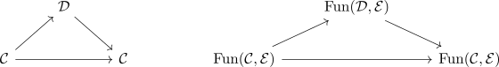

joyal equivalence of infinity categories and precomposition
Proposition
Let $\mathcal{C}, \mathcal{D}, \mathcal{E}$ be infinity categories and $f: \mathcal{C} \rightarrow \mathcal{D}$ an infinity functor
TFAE:
- $f$ is a joyal equivalence
- precomposition on the internal hom
is a joyal equivalence
Proof
1) $\implies$ 2)
By assumption there exists a \(2\)-simplex
to the quasi category of quasi categories with appropriate restriction.
Then applying the contravariant infinity hom functor as infinity functor gives a map
or

2) $\implies$ 1)
by infinity groupoid core sends joyal equivalences to joyal equivalences there exists the joyal equivalence
between the Kan complexes
This is a homotopy equivalence (cf. joyal equivalence and homotopy equivalence for kan complexes)
Hence there exists a bijection
Then setting $\mathcal{E} \coloneqq \mathcal{C}$ gives a Bijection
or a functor $g \in \mathrm{Fun}(\mathcal{D}, \mathcal{C}$ such that $[f^*(g)] = g \circ f = [\mathrm{id}]$ or that $g \circ f \cong \mathrm{id}$ are equivalent.
TODO